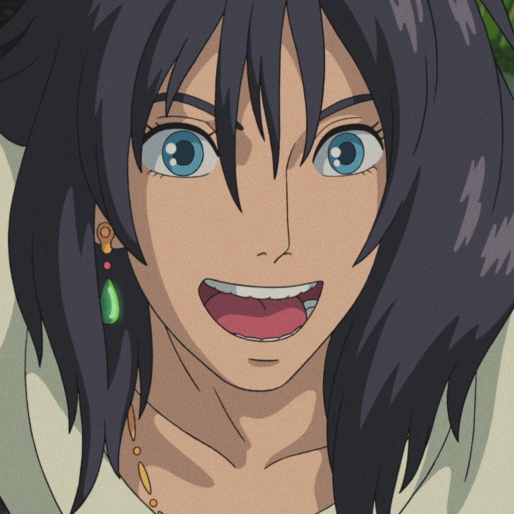
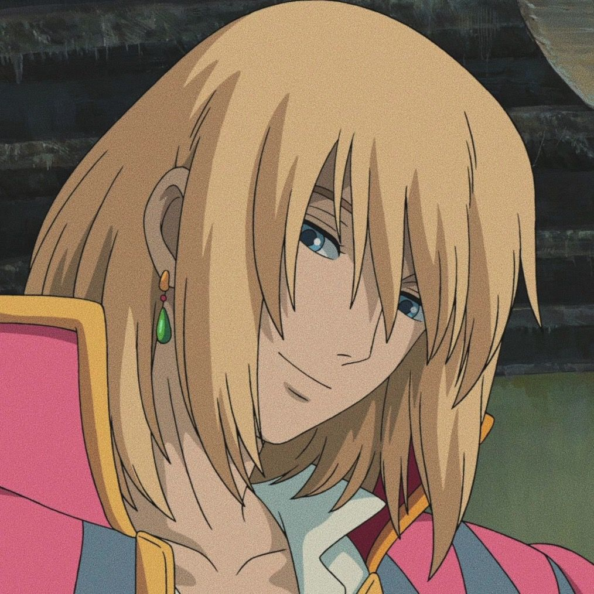
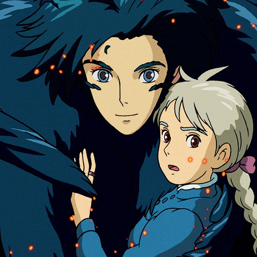
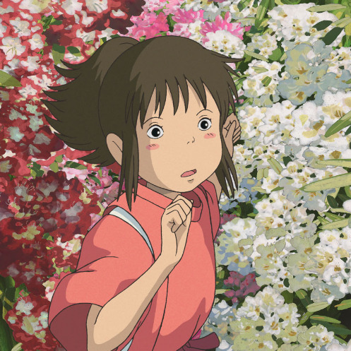
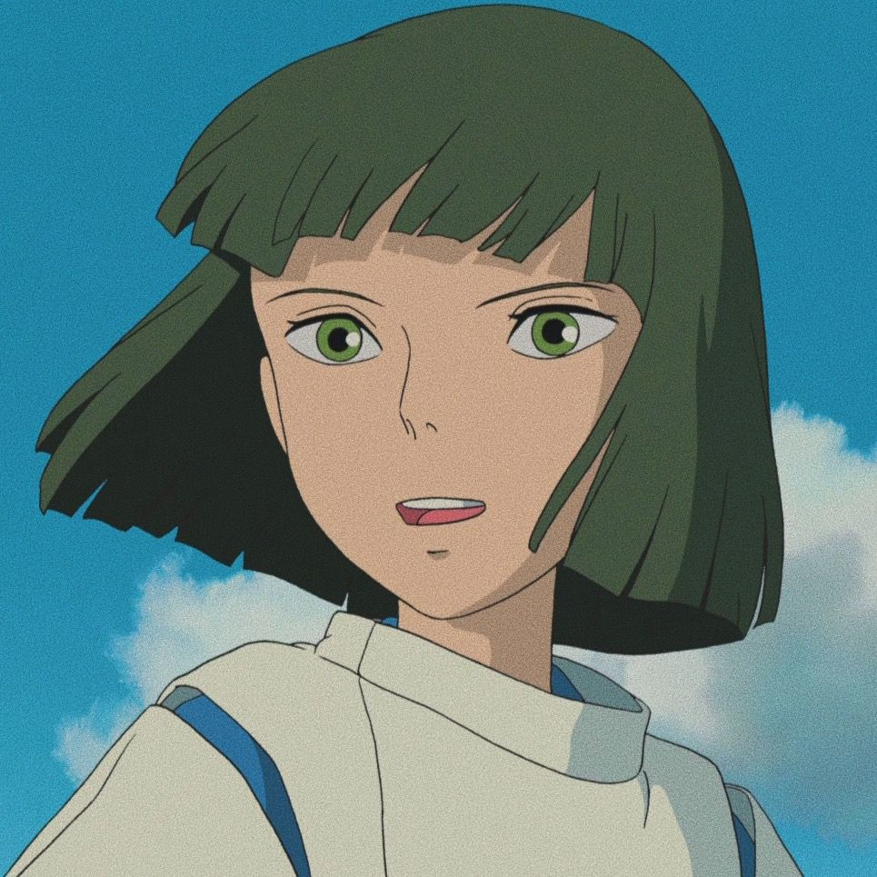
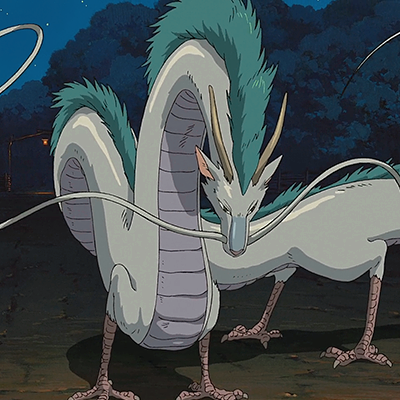
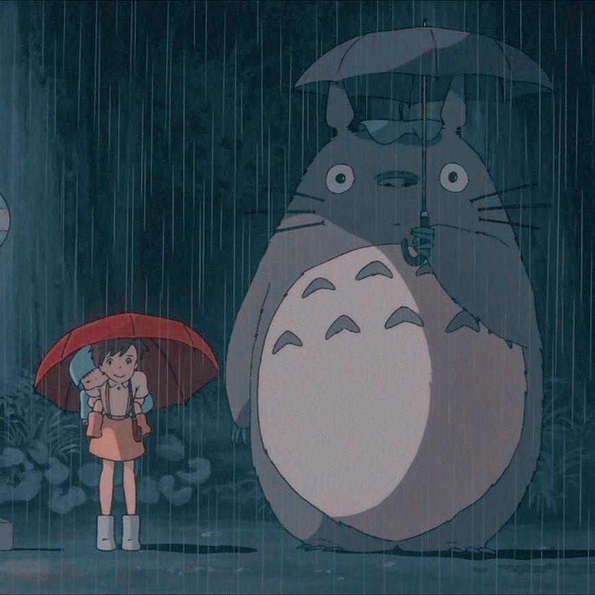
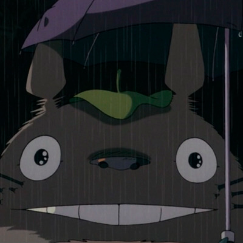
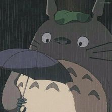

Howl Jenkins Pendragon
Howl Jenkins Pendragon (ハウル・ジェンキンス・ペンドラゴン, Hauru Jenkinsu Pendoragon) is a powerful wizard living in the
land of Ingary.Originally Howell Jenkins of Wales, he was part of a loose fraternity of wizards on
Earth. He made his way through a magical portal to Ingary, where he became known and respected as one of
the most powerful wizards there was. He owns a moving castle, and spreads rumors about himself to retain
his privacy, opting to be alone and hiding from all conflict.



Chihiro and her friends
Chihiro is a ten-year-old girl who has brown hair, brown eyes, and rosy cheeks. She is very petite and
has a childish appearance, and a pudgy face.Her attire includes a white medium-sleeved T-shirt with
bright green stripes, bright red shorts, white socks and sunshine yellow velcro sneakers. While working
in the bath house, she is barefoot and wears a coral colored kariginu robe with a white hitoe underneath
and short sashinuki trousers, as well as a tasuki cord for tying her sleeves up.



Totoro, the chad!
Totoro appears as a large furry creature with grey fur and beige belly with grey arrows on his chest. He
has pointy ears, long whiskers along with large paws with long claws. When he floats his mouth expands
greatly. His silhouette vaguely resembles that of an owl.


